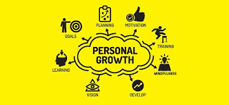
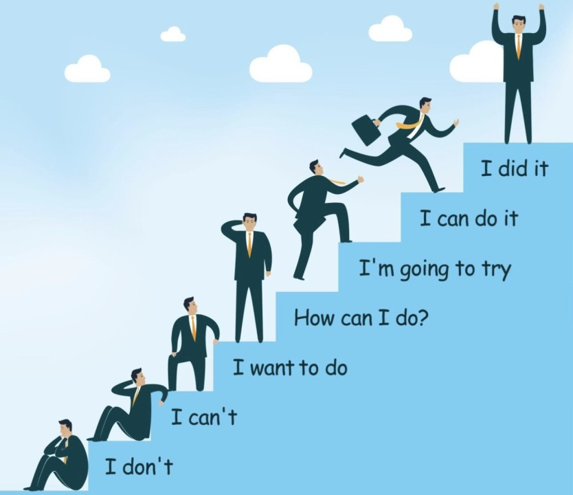

Self Improvement
Self improvement is a lifelong process that helps you to become a better version of yourself.
- Set clear goals for yourself
- Create a plan to achieve your goals
- Take action towards your goals
- Track your progress and make adjustments as needed
- Celebrate your successes and learn from your failures
What is Self Improvement?
Some popular self-improvement strategies include:
- Meditation and mindfulness
- Exercise and physical activity
- Reading and learning new things
- Journaling and reflection
- Spending time in nature
Here are some more self-improvement strategies. Click "MSIS" down below!!! :D
MSISBenefits of self improvement:

- Increased confidence and self-esteem
- Improved relationships and communication skills
- Better time management and productivity
- Increased resilience and stress management
- Improved overall well-being and happiness
Overall, self-improvement is a journey that can lead to a more satisfying and enriched life.

Common obstacles to self improvement:
- Procrastination and lack of motivation
- Self-doubt and negative self-talk
- Distractions and lack of focus
- Fear of failure and taking risks
- Perfectionism and unrealistic expectations
Overcoming these obstacles often requires patience and persistence. It’s important to recognize that overcoming challenges is a part of the self-improvement journey and can provide valuable lessons along the way.

Overcoming self-doubt and negative self-talk:
- Practice self-compassion and self-kindness
- Challenge negative thoughts and reframe them positively
- Focus on strengths and accomplishments
- Seek support from friends, family, or a therapist
- Celebrate small wins and successes

Integrating these practices into your daily routine can gradually help you develop a more positive, resilient mindset.
Building resilience and stress management:
- Practice relaxation techniques such as deep breathing or yoga
- Engage in regular exercise and physical activity
- Get enough sleep and maintain a healthy diet
- Seek social support from friends, family, or a support group
- Learn to say "no" and set healthy boundaries

Remember, self-improvement is a journey, not a destination. "Set goals, not finish lines; stop looking for the finish line." Seek challenge.